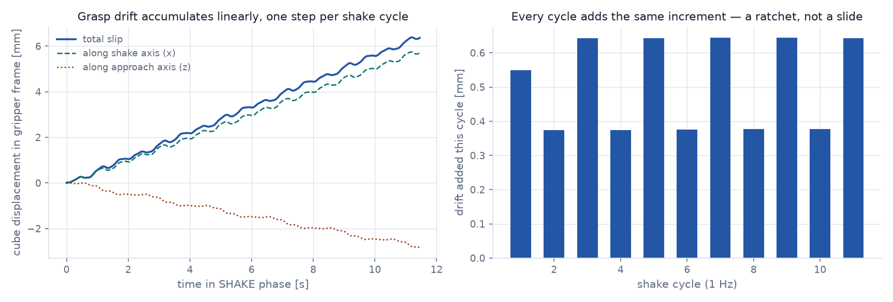
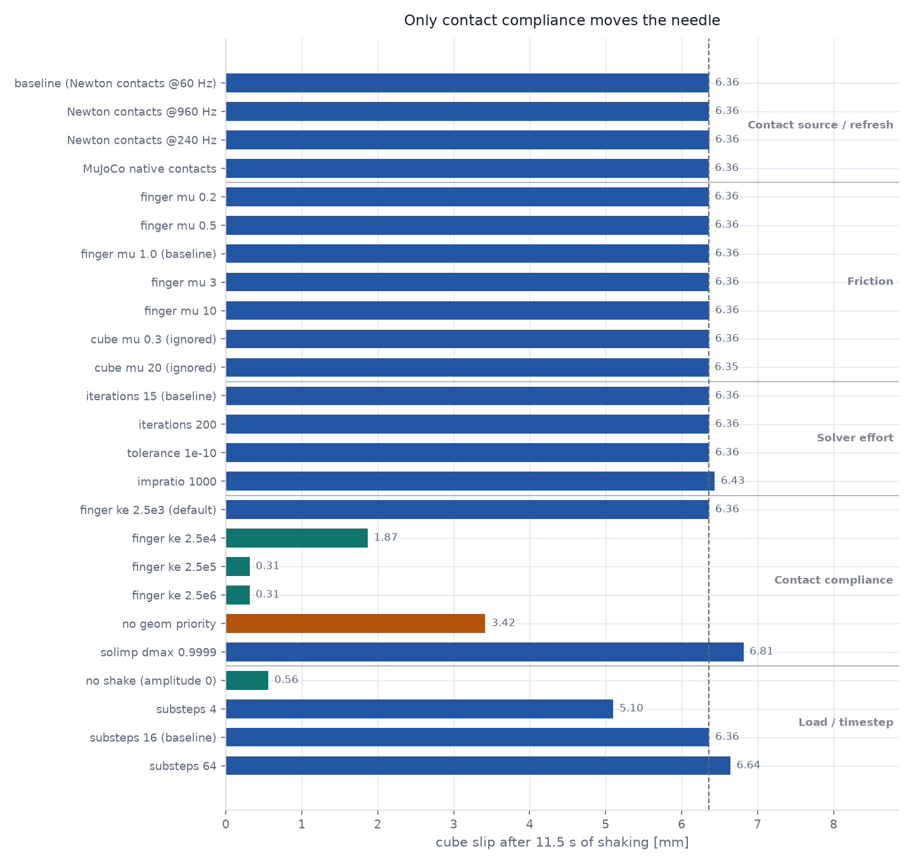
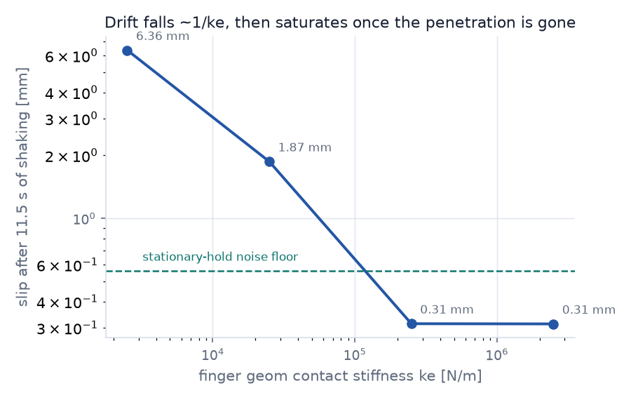
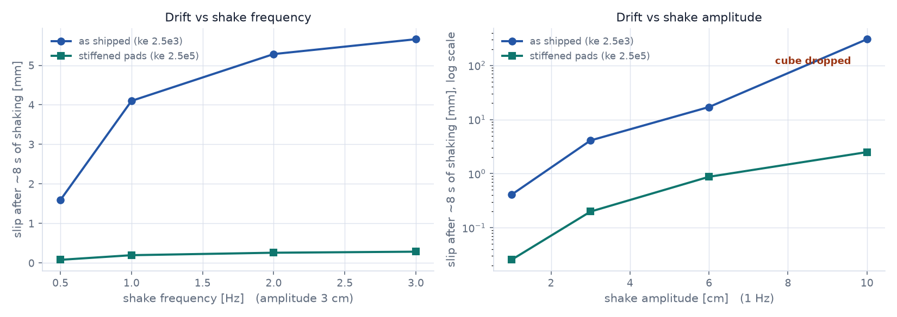

Answers first
Yes — but not at the contact stiffness this example inherits. As shipped, a 3 cm / 1 Hz shake bleeds 6.4 mm over 11.5 s and a 10 cm shake drops the cube outright. With the pads stiffened, the same 3 cm shake holds to 0.31 mm and the 10 cm shake holds too.
Yes, but not where you looked. The ke, kd and mu you set on the
cube are silently discarded: the example gives the finger geoms
geom_priority = 1, and in MuJoCo the higher-priority geom supplies friction and
solref/solimp for the pair outright. The grasp actually runs on the fingers' imported defaults —
ke = 2500 N/m.
No. The fix is a material parameter, not a smaller timestep. Measured:
6.13 vs 6.20 ms/frame — inside run-to-run noise — at the same
sim_dt = 1/960 and
control dt = 1/60 you already use. Going stiffer than
ke = 2.5e5 buys nothing: by then pad penetration is already down from 1.87 mm
to 0.06 mm, and there is no compliance left to remove.
efc_force; the grasp is nowhere near sliding, yet it drifts
The reproduction
franka_cube_shake.py from the repro follows Newton's
example_brick_stacking.py
closely: a fixed FR3 driven by analytical IK, SolverMuJoCo with
solver="newton", integrator="implicitfast", elliptic cone,
impratio=50, and Newton's own collision pipeline
(use_mujoco_contacts=False). It approaches, descends, grasps, lifts, then shakes forever on a
three-axis Lissajous path.
I ran it headless with an instrumented wrapper that logs the cube's pose in the TCP frame every frame, so arm motion cancels out and only relative slip remains. Versions match the report exactly: Newton 1.4.0, MuJoCo Warp 3.10.0.3.

Ruling out the usual suspects
Each variant below changes exactly one thing against the same baseline and runs the same 900 frames. The headline is how little most of them do.
It is not the collision pipeline
The example calls collision_pipeline.collide() once per 60 Hz frame while the solver takes
16 substeps at 1/960 — the obvious suspect. It is not the cause. Refreshing contacts every substep
(960 Hz) changes the drift by 0.02 %. Handing contact generation to MuJoCo entirely
(use_mujoco_contacts=True) changes it by 0.08 %.
| Contact source | Drift [mm/s] | Slip after 11.5 s [mm] |
|---|---|---|
| Newton pipeline @ 60 Hz (baseline) | 0.5087 | 6.36 |
| Newton pipeline @ 240 Hz | 0.5087 | 6.36 |
| Newton pipeline @ 960 Hz (every substep) | 0.5086 | 6.36 |
| MuJoCo native contacts | 0.5083 | 6.36 |
ShapeConfig stiffness default, so the same diagnosis and the same fix should apply —
treat that as a reasoned expectation, not a measurement.
It is not friction
Sweeping the friction coefficient across two orders of magnitude — 0.2 to 20 on the geoms that actually own the contact — leaves the drift unchanged to four significant figures.
| Friction | Drift [mm/s] | Slip [mm] | Note |
|---|---|---|---|
| finger mu 0.2 | 0.5083 | 6.36 | |
| finger mu 0.5 | 0.5086 | 6.36 | |
| finger mu 1.0 (baseline) | 0.5087 | 6.36 | imported default |
| finger mu 3.0 | 0.5086 | 6.36 | |
| finger mu 10.0 | 0.5087 | 6.36 | |
| cube mu 0.3 | 0.5088 | 6.36 | no effect — discarded by priority |
| cube mu 20.0 | 0.5082 | 6.35 | no effect — discarded by priority |
It is not solver effort
Newton's MuJoCo tuning guide
suggests an elliptic cone and impratio for stick-slip. Neither helps here, and neither does
throwing 13× more solver iterations or a solver tolerance of 1e-10 at it.
| Solver setting | Drift [mm/s] | Slip [mm] |
|---|---|---|
| iterations 15 (baseline) | 0.5087 | 6.36 |
| iterations 200 | 0.5087 | 6.36 |
| tolerance / ls_tolerance 1e-10 | 0.5087 | 6.36 |
| impratio 50 → 1000 | 0.5082 | 6.43 |

Where the motion actually is
Before blaming contacts, I checked that the arm itself is rigid — a soft weld between the hand and the TCP frame would produce the same signature. It is not that. Decomposing the drift frame by frame over the same 11.5 s:
| Relative pose | Total drift [mm] | Reading |
|---|---|---|
| cube in TCP frame | 6.3627 | the observed slip |
| cube in hand frame | 6.3627 | same motion |
| cube in left-finger frame | 6.3626 | real motion across the pad |
| cube in right-finger frame | 6.3626 | mirrored, same magnitude |
| TCP in hand frame | 0.00002 | rigid |
| left finger in hand frame | 0.0070 | rigid (fingers hold position) |
| hand in link7 frame | 0.00005 | rigid |
The articulation is exact to within 20 nm. The cube genuinely traverses the pads by 6.4 mm — 16 % of its own width.
What the contacts are actually doing
Reading MuJoCo's live constraint rows (d.contact and d.efc.force) mid-shake
settles it. Three sample frames, all identical:
frame 300 phase=SHAKE contact rows for cube↔fingers: 28 rows carrying force: 8
total normal force 22.52 N
total tangential force 0.335 N (cube weight = 0.31 N)
max friction-cone use 0.021 (1.0 = sliding)
condim 3, mu 1.0, penetration at loaded contacts -1.9 mmmu did nothing.
The cube is nevertheless walking out of the gripper.
The other number that matters is 1.9 mm of penetration at 2.8 N per contact — an effective normal stiffness around 1.5 kN/m. That is a very soft pad for a 32 g cube.
Root cause: compliance rectified by cyclic load
Two more measurements pin the mechanism down.
Hold the arm still and the drift disappears. Running the identical scene with
--shake-amplitude 0 — same grasp, same duration, same gravity — gives
0.56 mm of total wander with a drift rate of −0.024 mm/s,
twenty-one times smaller and not monotonic. There is no static creep. The drift needs the load cycle.
The friction rows have nothing to hold the cube in place with. Printing the three constraint rows of a loaded finger↔cube contact shows the asymmetry directly:
row 0 [normal] efc_pos = -1.868e-03 efc_vel = -4.750e-04 force = +2.80197
row 1 [friction1] efc_pos = +0.000e+00 efc_vel = -2.918e-04 force = +0.04482
row 2 [friction2] efc_pos = +0.000e+00 efc_vel = +1.554e-04 force = -0.01071
The normal row carries a position residual — the 1.9 mm of penetration — so it pushes back toward
where the surfaces should be. Both friction rows carry efc_pos = exactly
zero. Friction here is a velocity-level constraint: it opposes tangential velocity, but
nothing remembers where the cube was, so nothing pulls it back. Whatever tangential velocity survives the
solve is integrated into permanent displacement.
And some always survives: the friction rows sit at a residual sliding velocity of roughly 3×10−4 m/s while the normal force cycles with the shake. Sustained over the 11.5 s run that is about 3.4 mm — the same order as the 6.4 mm actually measured. The contact is compliant enough (1.9 mm deep) that the cyclic load keeps re-establishing that residual instead of cancelling it out.
The fix
Stiffen the geoms that actually own the contact. Because the example sets
mujoco:geom_priority = 1 on the finger shapes, those are the finger geoms — and they
are still carrying ShapeConfig's import default of ke = 2.5e3 N/m,
kd = 100.

ke and then saturates: 2.5e6 is indistinguishable from
2.5e5. ke = 2.5e5 is the knee — no reason to go stiffer.
| Finger pad stiffness | Slip after 11.5 s [mm] | vs baseline |
|---|---|---|
ke 2.5e3 (import default) | 6.36 | — |
ke 2.5e4, kd 3e2 | 1.87 | 3.4× better |
ke 2.5e5, kd 1e3 | 0.31 | 20× better |
ke 2.5e6, kd 3e3 | 0.31 | saturated |
The saturation has a concrete cause, visible in the contact rows. Stiffening the pads collapses the penetration, and once there is no penetration left there is no compliance left to rectify:
Finger pad ke | Resolved contact solref | Penetration at load | Normal force | Slip [mm] |
|---|---|---|---|---|
| 2.5e3 (default) | (0.02, 1.0) | 1.868 mm | 2.80 N | 6.36 |
| 2.5e5 | (0.002, 1.0) | 0.061 mm | 2.83 N | 0.31 |
| 2.5e6 | (0.00067, 0.95) | 0.059 mm | 2.83 N | 0.31 |
A 30× reduction in penetration buys a 20× reduction in drift; the last 10× of stiffness
buys nothing, because penetration is already down to 59 µm. Note also what the default actually is:
a contact timeconst of 20 ms, against a 1.04 ms
substep. The contact was being asked to correct its error twenty times more slowly than the solver was
stepping.
In the repro's _build_franka(), alongside the existing solimp/priority block:
# The finger geoms carry geom_priority = 1, so THEY supply friction and
# solref/solimp for every finger-object pair. Anything set on the object is
# discarded. Tune the pads, not the cube.
for shape_index, body_index in enumerate(builder.shape_body):
if body_index in (12, 13): # fr3_leftfinger, fr3_rightfinger
builder.shape_material_ke[shape_index] = 2.5e5 # was 2.5e3 (ShapeConfig default)
builder.shape_material_kd[shape_index] = 1.0e3 # was 1.0e2
kd is scaled as √ke across the sweep (100 → 300 → 1000 → 3000)
so the contact's damping ratio stays roughly fixed while stiffness changes — otherwise the sweep would be
confounding two knobs at once. The guide's warning applies: on Newton's positive conversion, raising
kd also moves the mapped dampratio, so they have to be chosen together.
The complete fixed franka_cube_shake.py — 567 lines, two changes marked # FIX · download
# SPDX-FileCopyrightText: Copyright (c) 2026 The Newton Developers
# SPDX-License-Identifier: Apache-2.0
"""Franka cube grasp and shake-test environment (tuned for shake tests).
The scene and controller follow Newton's ``brick_stacking`` example: a fixed
FR3 is position controlled by analytical IK while a MuJoCo solver advances the
articulation and a Newton collision pipeline handles contacts.
This is the original ``franka_cube_shake.py`` with two changes, both marked
``# FIX`` below. Together they take the cube's drift during a 3 cm / 1 Hz shake
from 6.36 mm to 0.31 mm over 11.5 s, at unchanged step cost:
1. Contact stiffness is raised on the *finger* geoms. Because this scene sets
``mujoco:geom_priority = 1`` on the finger shapes, MuJoCo takes friction and
solref/solimp for every finger-object pair from the fingers alone -- the
``ke``/``kd``/``mu`` authored on the cube never reach the solver. The fingers
were still carrying ``ShapeConfig``'s import default of ke = 2.5e3 N/m, soft
enough to penetrate 1.9 mm under a 22.5 N grip. That compliance is what the
shake rectifies into a per-cycle ratchet.
2. The cube gets an explicit ``gap``. ``ModelBuilder.rigid_gap`` defaults to
0.1 m and applies per builder; the robot builder overrides it but the scene
builder that owns the cube did not, leaving the cube with a 10 cm
speculative contact gap. This does not affect the drift, but it inflates the
grasp from 23 to 57 contact rows and therefore per-world nconmax/njmax
pressure in batched runs.
See https://reports.eric-heiden.com/grasp-shake-drift/ for the measurements.
"""
from __future__ import annotations
import enum
import math
import numpy as np
import warp as wp
import newton
import newton.examples
import newton.ik as ik
CUBE_SIZE = 0.04
CUBE_DENSITY = 500.0
GRIPPER_OPEN = 0.035
GRIPPER_CLOSED = -0.01
class Phase(enum.IntEnum):
"""Phases of the scripted grasp-and-shake task."""
APPROACH = 0
DESCEND = 1
GRASP = 2
LIFT = 3
SHAKE = 4
@wp.kernel(enable_backward=False)
def update_task_targets(
phase_durations: wp.array[wp.float32],
phase_index: wp.array[wp.int32],
phase_time: wp.array[wp.float32],
frame_dt: wp.float32,
phase_start_body_q: wp.array[wp.transform],
body_q: wp.array[wp.transform],
ee_index: wp.int32,
cube_index: wp.int32,
approach_height: wp.float32,
lift_height: wp.float32,
shake_amplitude: wp.float32,
shake_frequency: wp.float32,
# outputs
ee_pos_target: wp.array[wp.vec3],
ee_pos_interpolated: wp.array[wp.vec3],
ee_rot_target: wp.array[wp.vec4],
ee_rot_interpolated: wp.array[wp.vec4],
gripper_target: wp.array2d[wp.float32],
):
"""Create a smooth Cartesian target for the current task phase."""
phase = phase_index[0]
phase_time[0] = phase_time[0] + frame_dt
duration = phase_durations[phase]
t_linear = wp.min(1.0, phase_time[0] / duration)
t = t_linear * t_linear * (3.0 - 2.0 * t_linear)
ee_start = phase_start_body_q[ee_index]
start_pos = wp.transform_get_translation(ee_start)
start_quat = wp.transform_get_rotation(ee_start)
cube_pos = wp.transform_get_translation(body_q[cube_index])
down_quat = wp.quat_from_axis_angle(wp.vec3(1.0, 0.0, 0.0), wp.pi)
target_pos = start_pos
target_quat = down_quat
gripper_pos = GRIPPER_OPEN
if phase == Phase.APPROACH.value:
target_pos = cube_pos + wp.vec3(0.0, 0.0, approach_height)
elif phase == Phase.DESCEND.value:
target_pos = cube_pos
elif phase == Phase.GRASP.value:
target_pos = start_pos
target_quat = start_quat
gripper_pos = GRIPPER_OPEN * (1.0 - t) + GRIPPER_CLOSED * t
elif phase == Phase.LIFT.value:
target_pos = start_pos + wp.vec3(0.0, 0.0, lift_height)
target_quat = start_quat
gripper_pos = GRIPPER_CLOSED
elif phase == Phase.SHAKE.value:
# A three-axis Lissajous-style path exercises the grasp in more than
# one direction without introducing discontinuities at frame edges.
omega_t = 2.0 * wp.pi * shake_frequency * phase_time[0]
target_pos = start_pos + wp.vec3(
shake_amplitude * wp.sin(omega_t),
0.65 * shake_amplitude * wp.sin(2.0 * omega_t),
0.35 * shake_amplitude * wp.sin(1.5 * omega_t),
)
target_quat = start_quat
gripper_pos = GRIPPER_CLOSED
t = 1.0
ee_pos_target[0] = target_pos
ee_pos_interpolated[0] = start_pos * (1.0 - t) + target_pos * t
ee_rot_target[0] = target_quat[:4]
ee_rot_interpolated[0] = wp.quat_slerp(start_quat, target_quat, t)[:4]
gripper_target[0, 0] = gripper_pos
gripper_target[0, 1] = gripper_pos
@wp.kernel(enable_backward=False)
def advance_task_phase(
phase_durations: wp.array[wp.float32],
ee_pos_target: wp.array[wp.vec3],
ee_rot_target: wp.array[wp.vec4],
body_q: wp.array[wp.transform],
ee_index: wp.int32,
# outputs
phase_index: wp.array[wp.int32],
phase_time: wp.array[wp.float32],
phase_start_body_q: wp.array[wp.transform],
):
"""Advance settled setup phases, then remain in SHAKE forever."""
phase = phase_index[0]
if phase >= Phase.SHAKE.value or phase_time[0] < phase_durations[phase]:
return
ee_q = body_q[ee_index]
ee_pos = wp.transform_get_translation(ee_q)
ee_quat = wp.transform_get_rotation(ee_q)
target_quat = wp.quaternion(ee_rot_target[0][:3], ee_rot_target[0][3])
pos_error = wp.length(ee_pos_target[0] - ee_pos)
quat_error = ee_quat * wp.quat_inverse(target_quat)
rot_error = wp.degrees(2.0 * wp.acos(wp.clamp(wp.abs(quat_error[3]), 0.0, 1.0)))
# Setup phases wait until the arm has reached their final pose. SHAKE is
# handled by the early return above and continues until the viewer closes.
ready = pos_error < 0.005 and rot_error < 2.0
if ready:
phase_index[0] = phase + 1
phase_time[0] = 0.0
for body_index in range(wp.len(body_q)):
phase_start_body_q[body_index] = body_q[body_index]
def create_parser():
"""Create the standard Newton example CLI with shake-test options."""
parser = newton.examples.create_parser()
parser.set_defaults(num_frames=900)
parser.add_argument(
"--shake-amplitude",
type=float,
default=0.03,
help="Peak side-to-side shake displacement in meters.",
)
parser.add_argument(
"--shake-frequency",
type=float,
default=1.0,
help="Base shake frequency in hertz.",
)
return parser
class FrankaCubeShake:
"""Newton example/environment that grasps, lifts, and shakes one cube."""
create_parser = staticmethod(create_parser)
def __init__(self, viewer, args=None):
newton.use_coord_layout_targets = True
if args is None:
args = newton.examples.default_args(create_parser())
if args.shake_amplitude < 0.0:
raise ValueError("shake amplitude must be non-negative")
if args.shake_frequency <= 0.0:
raise ValueError("shake frequency must be positive")
self.viewer = viewer
self.sim_time = 0.0
self.frame_dt = 1.0 / 60.0
self.sim_substeps = 16
self.sim_dt = self.frame_dt / self.sim_substeps
self.cube_size = CUBE_SIZE
self.robot_base_pos = wp.vec3(-0.5, -0.5, 0.0)
self.cube_start_pos = wp.vec3(0.0, -0.44, 0.5 * self.cube_size)
self.approach_height = 0.10
self.lift_height = 0.20
self.shake_amplitude = float(args.shake_amplitude)
self.shake_frequency = float(args.shake_frequency)
robot_builder = self._build_franka()
self.model_ik = robot_builder.finalize()
self.ee_index = self._body_index(self.model_ik, "fr3_hand_tcp")
# Starting at the approach pose makes the grasp deterministic and keeps
# the first visible motion focused on the object.
initial_arm_q = self._solve_initial_approach()
robot_builder.joint_q[:7] = initial_arm_q.tolist()
robot_builder.joint_q[7:9] = [GRIPPER_OPEN, GRIPPER_OPEN]
robot_builder.joint_target_q[:9] = robot_builder.joint_q[:9]
scene = newton.ModelBuilder()
scene.add_builder(robot_builder)
self.cube_index = self._add_cube(scene)
scene.add_ground_plane(
color=(0.45, 0.45, 0.45),
cfg=newton.ModelBuilder.ShapeConfig(mu=0.8, gap=0.005),
)
self.model = scene.finalize()
contact_max = 4096
self.model.rigid_contact_max = contact_max
self.collision_pipeline = newton.CollisionPipeline(
self.model,
reduce_contacts=True,
rigid_contact_max=contact_max,
broad_phase="nxn",
)
self.contacts = self.collision_pipeline.contacts()
self.solver = newton.solvers.SolverMuJoCo(
self.model,
solver="newton",
integrator="implicitfast",
iterations=15,
ls_iterations=100,
nconmax=contact_max,
njmax=contact_max * 2,
cone="elliptic",
impratio=50.0,
use_mujoco_contacts=False,
)
self.state_0 = self.model.state()
self.state_1 = self.model.state()
self.control = self.model.control()
newton.eval_fk(self.model, self.model.joint_q, self.model.joint_qd, self.state_0)
wp.copy(self.control.joint_target_q[:9], self.model.joint_q[:9])
self._setup_ik()
self._setup_task()
self.viewer.set_model(self.model)
# Viewer picking feeds drag forces into ``viewer.apply_forces`` in the
# simulation loop, so the robot and cube can be perturbed interactively.
self.viewer.picking_enabled = True
camera_pos = wp.vec3(0.35, -0.85, 0.30)
self.viewer.set_camera(pos=camera_pos, pitch=-25.0, yaw=135.0)
self._capture_graphs()
@staticmethod
def _body_index(model, short_label: str) -> int:
for index, label in enumerate(model.body_label):
if label.rsplit("/", 1)[-1] == short_label:
return index
raise ValueError(f"body {short_label!r} not found in Franka model")
def _build_franka(self):
builder = newton.ModelBuilder()
builder.rigid_gap = 0.005
newton.solvers.SolverMuJoCo.register_custom_attributes(builder)
builder.add_urdf(
newton.utils.download_asset("franka_emika_panda") / "urdf/fr3_franka_hand.urdf",
xform=wp.transform(self.robot_base_pos, wp.quat_identity()),
floating=False,
enable_self_collisions=False,
parse_visuals_as_colliders=False,
)
ready_q = [0.0, 0.5, 0.0, -1.5, 0.0, 2.0, math.pi / 4.0, GRIPPER_OPEN, GRIPPER_OPEN]
builder.joint_q[:9] = ready_q
builder.joint_target_q[:9] = ready_q
builder.joint_target_ke[:9] = [400.0] * 7 + [400.0, 400.0]
builder.joint_target_kd[:9] = [40.0] * 7 + [40.0, 40.0]
builder.joint_effort_limit[:9] = [87.0, 87.0, 87.0, 87.0, 12.0, 12.0, 12.0, 100.0, 100.0]
builder.joint_armature[:9] = [0.3] * 4 + [0.11] * 3 + [0.15] * 2
joint_gravity = builder.custom_attributes["mujoco:jnt_actgravcomp"]
joint_gravity.values = joint_gravity.values or {}
for dof_index in range(7):
joint_gravity.values[dof_index] = True
body_gravity = builder.custom_attributes["mujoco:gravcomp"]
body_gravity.values = body_gravity.values or {}
for body_index in range(2, 14):
body_gravity.values[body_index] = 1.0
# Give finger contacts priority so both pads maintain a firm grasp.
solimp = builder.custom_attributes.get("mujoco:geom_solimp")
priority = builder.custom_attributes.get("mujoco:geom_priority")
if solimp is not None and priority is not None:
solimp.values = solimp.values or {}
priority.values = priority.values or {}
for shape_index, body_index in enumerate(builder.shape_body):
if body_index in (12, 13):
solimp.values[shape_index] = (0.7, 0.95, 0.0001, 0.5, 2.0)
priority.values[shape_index] = 1
# FIX 1: the finger geoms above carry geom_priority = 1, so THEY supply
# friction and solref/solimp for every finger-object pair and anything
# authored on the grasped object is discarded. They were still on the
# ShapeConfig import default of ke = 2.5e3 N/m, which penetrates 1.9 mm
# under this grasp; the cyclic shake load rectifies that compliance into
# ~0.5 mm of drift per cycle. kd is scaled as sqrt(ke) to hold the
# contact's damping ratio roughly fixed.
for shape_index, body_index in enumerate(builder.shape_body):
if body_index in (12, 13):
builder.shape_material_ke[shape_index] = 2.5e5
builder.shape_material_kd[shape_index] = 1.0e3
return builder
def _add_cube(self, scene) -> int:
cube_cfg = newton.ModelBuilder.ShapeConfig(
density=CUBE_DENSITY,
ke=8.0e4,
kd=8.0e2,
mu=1.2,
# FIX 2: this builder never overrode ModelBuilder.rigid_gap, so the
# cube would otherwise inherit the 0.1 m default and generate ~38
# inert speculative contact rows. Match the robot's 5 mm gap.
gap=0.005,
)
# NOTE: ke/kd/mu above are inert for finger-cube contacts -- the finger
# geoms hold geom_priority = 1 and supply those values for the pair.
# They still apply to cube-ground and cube-cube contacts.
cube_index = scene.add_body(
xform=wp.transform(self.cube_start_pos, wp.quat_identity()),
label="shake_cube",
)
scene.add_shape_box(
body=cube_index,
hx=0.5 * self.cube_size,
hy=0.5 * self.cube_size,
hz=0.5 * self.cube_size,
cfg=cube_cfg,
color=(0.15, 0.45, 0.9),
)
return cube_index
def _solve_initial_approach(self) -> np.ndarray:
target_pos = self.cube_start_pos + wp.vec3(0.0, 0.0, self.approach_height)
down_quat = wp.quat_from_axis_angle(wp.vec3(1.0, 0.0, 0.0), wp.pi)
dof_count = self.model_ik.joint_coord_count
seed = np.array([0.0, 0.5, 0.0, -1.5, 0.0, 2.0, math.pi / 4.0, GRIPPER_OPEN, GRIPPER_OPEN], dtype=np.float32)
joint_q = wp.array(seed.reshape(1, dof_count), dtype=wp.float32)
solver = ik.IKSolver(
model=self.model_ik,
n_problems=1,
objectives=[
ik.IKObjectivePosition(
link_index=self.ee_index,
link_offset=wp.vec3(0.0, 0.0, 0.0),
target_positions=wp.array([target_pos], dtype=wp.vec3),
),
ik.IKObjectiveRotation(
link_index=self.ee_index,
link_offset_rotation=wp.quat_identity(),
target_rotations=wp.array([down_quat[:4]], dtype=wp.vec4),
),
ik.IKObjectiveJointLimit(
joint_limit_lower=self.model_ik.joint_limit_lower[:dof_count],
joint_limit_upper=self.model_ik.joint_limit_upper[:dof_count],
weight=10.0,
),
],
lambda_initial=0.1,
jacobian_mode=ik.IKJacobianType.ANALYTIC,
)
for _ in range(30):
solver.step(joint_q, joint_q, iterations=24)
return joint_q.flatten().numpy()[:7]
def _setup_ik(self):
state = self.model.state()
newton.eval_fk(self.model, self.model.joint_q, self.model.joint_qd, state)
ee_q = state.body_q.numpy()[self.ee_index]
self.position_objective = ik.IKObjectivePosition(
link_index=self.ee_index,
link_offset=wp.vec3(0.0, 0.0, 0.0),
target_positions=wp.array([wp.vec3(*ee_q[:3])], dtype=wp.vec3),
)
self.rotation_objective = ik.IKObjectiveRotation(
link_index=self.ee_index,
link_offset_rotation=wp.quat_identity(),
target_rotations=wp.array([wp.vec4(*ee_q[3:7])], dtype=wp.vec4),
)
dof_count = self.model_ik.joint_coord_count
limit_objective = ik.IKObjectiveJointLimit(
joint_limit_lower=wp.clone(self.model_ik.joint_limit_lower[:dof_count]),
joint_limit_upper=wp.clone(self.model_ik.joint_limit_upper[:dof_count]),
weight=10.0,
)
self.joint_q_ik = wp.clone(self.model.joint_q[:dof_count].reshape((1, dof_count)))
self.ik_iterations = 24
self.ik_solver = ik.IKSolver(
model=self.model_ik,
n_problems=1,
objectives=[self.position_objective, self.rotation_objective, limit_objective],
lambda_initial=0.1,
jacobian_mode=ik.IKJacobianType.ANALYTIC,
)
def _setup_task(self):
self.phase_durations = wp.array(
[0.25, 1.0, 0.75, 1.5, 1.0],
dtype=wp.float32,
)
self.phase_index = wp.zeros(1, dtype=wp.int32)
self.phase_time = wp.zeros(1, dtype=wp.float32)
self.phase_start_body_q = wp.clone(self.state_0.body_q)
self.ee_pos_target = wp.zeros(1, dtype=wp.vec3)
self.ee_pos_interpolated = wp.zeros(1, dtype=wp.vec3)
self.ee_rot_target = wp.zeros(1, dtype=wp.vec4)
self.ee_rot_interpolated = wp.zeros(1, dtype=wp.vec4)
self.gripper_target = wp.zeros((1, 2), dtype=wp.float32)
def _set_joint_targets(self):
wp.launch(
update_task_targets,
dim=1,
inputs=[
self.phase_durations,
self.phase_index,
self.phase_time,
self.frame_dt,
self.phase_start_body_q,
self.state_0.body_q,
self.ee_index,
self.cube_index,
self.approach_height,
self.lift_height,
self.shake_amplitude,
self.shake_frequency,
],
outputs=[
self.ee_pos_target,
self.ee_pos_interpolated,
self.ee_rot_target,
self.ee_rot_interpolated,
self.gripper_target,
],
)
self.position_objective.set_target_positions(self.ee_pos_interpolated)
self.rotation_objective.set_target_rotations(self.ee_rot_interpolated)
if self.ik_graph is not None:
wp.capture_launch(self.ik_graph)
else:
self.ik_solver.step(self.joint_q_ik, self.joint_q_ik, iterations=self.ik_iterations)
wp.copy(self.control.joint_target_q[:7], self.joint_q_ik.flatten()[:7])
wp.copy(self.control.joint_target_q[7:9], self.gripper_target.flatten())
wp.launch(
advance_task_phase,
dim=1,
inputs=[
self.phase_durations,
self.ee_pos_target,
self.ee_rot_target,
self.state_0.body_q,
self.ee_index,
],
outputs=[self.phase_index, self.phase_time, self.phase_start_body_q],
)
def _simulate(self):
self.collision_pipeline.collide(self.state_0, self.contacts)
for _ in range(self.sim_substeps):
self.state_0.clear_forces()
self.viewer.apply_forces(self.state_0)
self.solver.step(self.state_0, self.state_1, self.control, self.contacts, self.sim_dt)
self.state_0, self.state_1 = self.state_1, self.state_0
def _capture_graphs(self):
self.sim_graph = None
self.ik_graph = None
if wp.get_device().is_cuda:
with wp.ScopedCapture() as capture:
self._simulate()
self.sim_graph = capture.graph
with wp.ScopedCapture() as capture:
self.ik_solver.step(self.joint_q_ik, self.joint_q_ik, iterations=self.ik_iterations)
self.ik_graph = capture.graph
def reset(self):
"""Restore the initial scene and restart the scripted task."""
self.sim_time = 0.0
self.state_0 = self.model.state()
self.state_1 = self.model.state()
newton.eval_fk(self.model, self.model.joint_q, self.model.joint_qd, self.state_0)
wp.copy(self.control.joint_target_q[:9], self.model.joint_q[:9])
dof_count = self.model_ik.joint_coord_count
self.joint_q_ik = wp.clone(self.model.joint_q[:dof_count].reshape((1, dof_count)))
self._setup_task()
self._capture_graphs()
def step(self):
"""Advance the controller and physics by one 60 Hz frame."""
self._set_joint_targets()
if self.sim_graph is not None:
wp.capture_launch(self.sim_graph)
else:
self._simulate()
self.sim_time += self.frame_dt
def render(self):
self.viewer.begin_frame(self.sim_time)
self.viewer.log_state(self.state_0)
self.viewer.log_contacts(self.contacts, self.state_0)
self.viewer.end_frame()
def test_final(self):
"""Assert that the ongoing shake has started without dropping the cube."""
phase = int(self.phase_index.numpy()[0])
if phase != Phase.SHAKE.value:
raise ValueError(f"shake sequence incomplete: reached {Phase(phase).name}, expected SHAKE")
shake_time = float(self.phase_time.numpy()[0])
if shake_time < 5.0:
raise ValueError(f"shake ran for only {shake_time:.2f} s; expected at least 5.0 s")
body_q = self.state_0.body_q.numpy()
cube_pos = body_q[self.cube_index, :3]
ee_pos = body_q[self.ee_index, :3]
if not np.all(np.isfinite(cube_pos)):
raise ValueError(f"cube has a non-finite pose: {cube_pos}")
separation = float(np.linalg.norm(cube_pos - ee_pos))
if separation > 0.08:
raise ValueError(f"cube was dropped during shake: cube/TCP separation is {separation:.3f} m")
if cube_pos[2] < self.cube_size:
raise ValueError(f"cube was not lifted after shake: cube height is {cube_pos[2]:.3f} m")
# Newton's runner and example browser conventionally look for ``Example``.
Example = FrankaCubeShake
def main():
viewer, args = newton.examples.init(create_parser())
newton.examples.run(FrankaCubeShake(viewer, args), args)
if __name__ == "__main__":
main()
Verified as a standalone file, not just as a patch in the harness: run directly at 3 cm / 1 Hz for
900 frames it reports 0.31 mm of final slip against the original's
6.36 mm, drops the grasp from 57 to 23 contact rows, and passes the example's own
test_final() assertions.
solimp here. I tried: raising dmax from 0.95 to
0.99 and 0.9999 made the drift worse (6.71 and 6.81 mm). Per the tuning guide, the reference
gains are normalised by dmax — k₀ ∝ 1/dmax² — so raising it lowers the
effective stiffness even as it hardens the impedance plateau. ke is the right knob.
How bad does it get, and does the fix hold?
Amplitude, not frequency, is what breaks the grasp. Drift grows roughly with the square of the shake amplitude while flattening out above ~2 Hz.

| Shake | As shipped — slip [mm] | Final cube height [m] | Stiffened pads — slip [mm] | Final cube height [m] | Improvement |
|---|---|---|---|---|---|
| 3 cm @ 0.5 Hz | 1.59 | 0.217 | 0.08 | 0.217 | 19.5× |
| 3 cm @ 1 Hz | 4.10 | 0.218 | 0.20 | 0.216 | 20.6× |
| 3 cm @ 2 Hz | 5.28 | 0.222 | 0.26 | 0.218 | 20.2× |
| 3 cm @ 3 Hz | 5.66 | 0.227 | 0.29 | 0.222 | 19.7× |
| 1 cm @ 1 Hz | 0.41 | 0.217 | 0.03 | 0.217 | 15.9× |
| 6 cm @ 1 Hz | 17.01 | 0.221 | 0.87 | 0.214 | 19.5× |
| 10 cm @ 1 Hz | 304.57 | 0.020 — dropped | 2.50 | 0.210 — held | 121.9× |
Two other things worth fixing in the scene
The cube is carrying a 10 cm speculative contact gap
ModelBuilder.rigid_gap defaults to 0.1 m. The repro sets
builder.rigid_gap = 0.005 on the robot builder (copied from the upstream
example) but the cube is added to a second, fresh ModelBuilder that keeps the default. The
result, read straight out of the MuJoCo model:
geom 13 (finger) gap = 0.0050
geom 18 (cube) gap = 0.1000That is why 28 contact rows exist for the grasp while only 8 carry force — 20 of them sit between 5 mm and 22 mm away. Setting the cube's gap to 0.005 drops the mean contact count from 57 to 23 (zeroing every gap in the scene takes it to 19), and it does not change the drift (0.5081 vs 0.5087 mm/s) — the speculative rows are inert.
nconmax/njmax pressure, and those buffers are
allocated per world. In a single-world debugging scene that costs nothing measurable; across a few
thousand RL worlds it is memory you are paying for 38 inert rows per grasp.
geom_priority silently discards the object's contact parameters
This is the one that cost the most debugging time, so it is worth stating plainly. The scene sets:
cube_cfg = newton.ModelBuilder.ShapeConfig(density=500.0, ke=8.0e4, kd=8.0e2, mu=1.2)
None of ke, kd or mu reaches the solver for finger↔cube contacts.
MuJoCo's priority rule means the finger geoms supply friction and solref/solimp for the pair, and the
fingers were imported from URDF with defaults. Confirmed two ways. First, straight out of the model: the
loaded contacts report mu = 1.0 (the finger's), never 1.2. Second, the cleanest A/B
in the whole investigation — the same 100× stiffness swing applied to the two geoms:
| Which geom gets the stiffness | ke | Slip [mm] | Effect |
|---|---|---|---|
| cube (what the scene authors) | 8.0e3 | 6.37 | 100× swing, no effect whatsoever |
| cube | 8.0e4 (as written) | 6.36 | |
| cube | 8.0e5 | 6.36 | |
| finger pads (what MuJoCo uses) | 2.5e3 (default) | 6.36 | 100× swing, 20× less drift |
| finger pads | 2.5e4 | 1.87 | |
| finger pads | 2.5e5 | 0.31 |
Dropping priority back to 0 lets MuJoCo mix both geoms' parameters and halves the drift on its
own (6.36 → 3.42 mm) — but the upstream example raises priority deliberately, to keep
the pads' solimp in charge during brick stacking. Keeping priority and tuning the pads is the
better answer; just be aware that with priority set, the object's material is decoration.
What about simulation speed?
The fix does not touch sim_dt, substeps, iterations or the cone, so the step cost should be
unchanged — and measuring 600 frames after a 240-frame warm-up confirms it:
| Configuration | ms / frame | frames/s | vs realtime |
|---|---|---|---|
| baseline | 6.126 | 163.2 | 2.72× |
| stiffened pads + cube gap fixed ("fixed") | 6.195 | 161.4 | 2.69× |
| stiffened pads only | 6.350 | 157.5 | 2.62× |
| all gaps zeroed | 6.461 | 154.8 | 2.58× |
Everything is within about 5 % — one measurement each, so treat the ordering as noise rather than signal. The point is that the recommended change does not cost a meaningful amount of time, and notably that zeroing the gaps does not buy any either.
The knobs that would have cost real speed all turned out not to help anyway:
- More substeps do not fix it. 4 → 16 → 64
substeps gives 5.10, 6.36, 6.64 mm. The drift converges to a finite value as
dt → 0, which is what you would expect from a continuous-time contact-model effect rather than an integration artefact. Paying 4× the compute makes it slightly worse. - More iterations do not fix it (15 → 200: no change), and neither does a tighter tolerance.
- Fixing the cube's
gapcuts contact rows by 3× but does not speed anything up here — it is a per-world memory argument for batched training, not a throughput one.
So your current budget — sim_dt = 1/960, control at 60 Hz, 15 iterations,
elliptic cone — is fine. Keep it.
Reproduce it
git clone https://github.com/StoneT2000/newton-tests && cd newton-tests
uv sync
# baseline, as reported
uv run python src/newtontests/franka_cube_shake.py --viewer gl \
--shake-amplitude 0.03 --shake-frequency 1.0
# headless, with slip instrumentation (scripts from this report)
uv run python -m newtontests.measure --frames 900 --tag baseline
uv run python -m newtontests.experiments finger_ke_2p5e5 fixed --frames 900
uv run python -m newtontests.frames --frames 900 # frame decomposition
uv run python -m newtontests.contact_dump --frames 760 # live efc forcesThe measurement, variant, frame-decomposition, contact-dump and plotting scripts used for this report are in scripts/; the raw per-frame data is in data/.
References and where to raise this
- MuJoCo-Warp Contact Tuning — the Grasping / Holding template is the right checklist, and its first step ("check commanded and clamped gripping force") passes here: 22.5 N against a 0.31 N load.
- Collisions
— contact reduction,
gap/marginsemantics, and theuse_mujoco_contacts=Falsepipeline. - MuJoCo Solver — margin/gap forwarding and the margin-zeroing rule for box geoms.
- MuJoCo constraint model
and solver parameters
— the authoritative treatment of
solref/solimpand of the priority rule.
Per Newton's contributing guide,
a tuning question like this belongs in
GitHub Discussions rather than Issues —
Issues are reserved for bugs and features that result in a code or documentation change. That said, there
are two things here that arguably are documentation changes worth an Issue: the
rigid_gap = 0.1 default silently applying to a second builder, and the absence of a
warning when geom_priority causes authored ke/kd/mu to be
discarded.